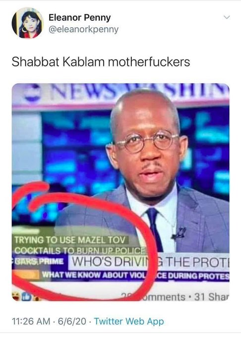
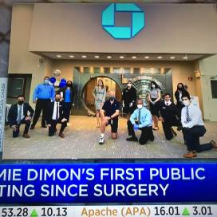

Week 24
"@linseymarr
Excellent work by NBACC showing that aerosolized virus decays rapidly in sunlight: 90% gone in 6 min in summer"
Bundestagsabgeordneter. Right on dude 👍
Excellent. Lead. Top-down, not bottom-up.
"The House Financial Services Committee (FSC) Task Force on Financial Technology will be evaluating how FedAccounts and other digital tools might help the federal government distribute stimulus payments to help Americans suffering the economic fallout of COVID-19. The virtual hearing kicks off at noon Eastern (16:00 UTC)"
Blacksplaining!
Just kidding..
"@thEMANacho
Dear white people, For days you’ve asked me what you can do to help. I’ve finally found an answer"
How do u pass a law named after a person and dont arrest the people who killed her https://t.co/4MO7B2nvwU
— thunderr (@thunderthundr) June 12, 2020
"You keep on learning and learning, and pretty soon you learn something no one has learned before" -- Feynman
"Stop Training Police Like They’re Joining the Military"
That's right. He probably saw foraging soc who had no need for it. You get pagan religion if u r a peasant, worshipping bones, ancestors, and fucking a sheep on the side. Then you need religion as politics against the landowner class, mafia empires, against inequality. Wout agro, no Rome, no girlfriend sheep, no need for religion. U already are in Eden.
"Beyond the fact that they have no church, no religion, and are not idolaters, what more can I say?” -- Vespucci on Native Americans
"If liberty means anything at all it means the right to tell people what they do not want to hear." -- George Orwell
"DOE marking $30M toward solid oxide fuel cell & hydrogen production R&D for power generation"
Well that's the job isn't it? Random ass kicking
"@mdslock
NYPD lieutenant apologizes for kneeling alongside George Floyd protesters 'The cop in me wants to kick my own ass.'"
THAT'S WHAT THEY'RE APOLOGIZING FOR??https://t.co/cdAogmeK7N
— Jamaal Bowman (@JamaalBowmanNY) June 11, 2020
From the man himself..
Later he had a kirkuffle w Putin, word is he is now in Ukraine seeking payback..
The Atlantic: "As extraordinary as the decision by the Minneapolis City Council was, the prospect of dismantling a police force—even one with tens of thousands of officers—isn’t novel. In the Republic of Georgia, it has already been done. At the turn of the 21st century, Georgia was one of the most corrupt places on Earth. Bribery in the country, which lies in the Caucasus and shares a border with Russia, was rampant, and its police force, which was both a beneficiary and an enforcer of the system, was widely distrusted. So endemic was the issue that when a new government came to power in 2004, it determined that the country’s police force was too corrupt to be fixed. So its leaders decided to abolish the force entirely, sacking about 30,000 officers. Then it began the three-year process of hiring a smaller, better trained—and, crucially, corruption-free—police force to replace it"
"Australian PM on China tensions: country won't trade values in response to 'coercion'"
"@xSt33zy
I fixed it"
To be precise it is survival, which trumps emotion, but I get what u mean
"@leashless
The emotion which rules this world is fear of poverty. It is behind all other masks"
— Marc Lamont Hill (@marclamonthill) June 10, 2020
"@jmartNYT
NEWS: [LeBron] @kingjames is finally taking the plunge into politics. He and a handful of athletes and entertainers are starting a new group to protect black voting rights"
Rabbit emerges from the ocean. The world has officially gone mad pic.twitter.com/fAvDbvnyfh
— Science is Amazing (@AMAZlNGSCIENCE) June 11, 2020
A foot on the accelerator for fuel cell technology! Michelin and @SymbioFCell selected as preferential (and proud!) partners of the @MissionH24 program for the development of fuel cell power in motor racing! https://t.co/yIsuxhPVpa @GreenGTOfficiel @Total @24hoursoflemans pic.twitter.com/duXKpWmpo8
— Michelin (@Michelin) June 10, 2020
Employees are not exactly "100% capitalist" just because they work in a company. Various departments in a comp are not fully exposed to the ups and downs of the "outside", the market. They have certain amt of manpower, certain things they can do, they schedule and do them, mostly in a routine. Yes, like a bureucracy (The B-word). IT, HR, Finance, Sales, etc.. these are all bureucracies within companies.
"@HislopMD
Doctors are AMAZED at these 10 ways to BOOST your immune system:
The Polio vaccine
The Mumps vaccine
The Rubella vaccine
The Tetanus vaccine
The Measles vaccine
The Varicella vaccine
The Hepatitis vaccine
The Pertussis vaccine
The Diphtheria vaccine
The Pneumonia vaccine"
Word is Italians and TR are on one side, and everyone else on the other in Libya... Descendants of Rome I and III? This probably won't end well.
Deleted a quant repo I had published a while back. Was quite popular too. Removed all its local backups, so now code will now survive through its clones out there in hyperspace.
"@ANativeAngeleno
This is a big deal. The game is on, and the Germans are betting big. How will California compete in this energy transition?
'German cabinet approves hydrogen strategy, sets 14 TWh (Terrawatt hour) target by 2030'"
Please dont sing lullabies
Oh no
"@MarlowNYC
regret to inform you the celebs are at it again"
"@EmmaVigeland
The Democratic D.C. mayor who painted "Black Lives Matter" on the street won’t reconsider police funding.
The Democratic Party in a nutshell"
Europe keep powering up Hydrogen trains. Is the U.S next? #hydrogen #zeroemsission #renewableenergy #wecantwait https://t.co/JpEJkQ0PFo
— RyseHydrogen #wecantwait (@RyseHydrogen) June 11, 2020
But a-how a-will I eat a-my a-gabagoool?
"Christopher Columbus statue beheaded in Boston, one in Richmond thrown in lake"
Want: >3000 Watt portable H2-fueled energy generator <20 kg in hardware.
Germany's highly anticipated #hydrogen strategy is only available in German, but here is an extensive summary in English: https://t.co/DYf0H7HeYq#H2 #EnergyTransition #renewables pic.twitter.com/CitakeCIFC
— Clean Energy Wire (@cleanenergywire) June 10, 2020
"German government agrees on national hydrogen strategy"
Real change happens top-down, not bottom-up.
Top, bottom are a bit misleading words though.. Your dentist is not your superior bcz he knows dentistry better than you.
People revolt, react -- they are not policy experts, this is what they do. Sure their anger can push leadership, but that's kind of late at that point isn't it? Isn't the point of political leadership that things do not get there in the first place? Revolt indicates failure of politics.
"@garrygolden
Battery-only EV crowd is misreading why H2 Fuel Cells will win over OEMs for heavy duty AND passenger. FC upsides;: cost per mass; less risky/simpler supply chains; building out H2 refueling at scale is cheaper than costs of grid balancing and extending wires"
It's popular among some conservatives to point out that the Democratic Party used to defend slavery.
— Binyamin Appelbaum (@BCAppelbaum) June 10, 2020
Well, the Republican Party used to oppose the Confederacy.
I love it when the units line up.
"This plane must be produced thanks to a very, very high dilution rate using hydrogen," he said. (French finance minister Bruno Le Maire)#hydrogen #Airbus https://t.co/I7YB3l8lhb
— f-cell (@fcell_Germany) June 10, 2020
Being "tough on crime". Sounded so great on paper and on TV back in the day esp when u delivered it with a half open-mouth "IT person", second-rate channeling of R. Redford, but did these "tough" policies work? Were their potential side effects thought through?
That was a mistake
"Trump’s advisers convinced him not to address the nation in the aftermath of George Floyd’s brutal murder"
Someone get that floating Tesla while you are at it -- cuz u know, space junk
I get to try to convince people and the government to clean up space junk, which i think is pretty cool https://t.co/w45LbOesKA
— Luc Riesbeck🪐☄️🛰♻️ (@LucRiesbeck) June 10, 2020
Dear everyone who is uncomfortable right now: that’s the point.
— Sam Sanders (@samsanders) June 9, 2020
The UK's progress on green energy is mindblowing - from total dependency on coal 8 years ago, to now going many months without using any at all pic.twitter.com/QcxAaaF0vQ
— John Cope (@john_cope) June 9, 2020
Walls.. they keep coming up dont they?
Sea walls are not a climate solution.
— Edgar McGregor🌎🌴 (@edgarrmcgregor) June 9, 2020
"@tressiemcphd
The publishing industry is now about to give exactly two black people a ridiculous advance to shut y'all up and it will be like Ben Carson Jr and Condoleezza's creative niece"
How do you create a peer-to-peer Twitter? Or Facebook?
All u need is your own node. A company or gov can provide that.
User logs into his own node. Installs and runs apps on that node. Those nodes communicate with other nodes to do their work. The end.
A twitter app would simply publish ur latest tweets (via JSON, on your own server), expose this info through an outside-callable interface. The nodes of the "followers" will hit these APIs once in a while to collect and present them in their app when the "follower user" logs in to his node. Caching mechanisms, async messaging can be easily implemented to speed this up.
This Open Twitter, Open Facebook can be open source based, u download social net code from Github, to your node, and run it. But most users wont deal with that, they will simply get their apps preinstalled on the node, or choose apps through a simple Web interface (which in the background would know which code to get from Github).
Censoring open, peer-to-peer apps will be harder. There is no single company to intimidate.
"@gsiskind
Given rumors I’m hearing from pretty good sources, if you’re on an H-1B, J-1 or L-1 visa and are outside the US, you should try and reenter the US quickly"
"The city, home to a population about 17% of Minneapolis' size, dissolved its police department in 2012 and replaced it with an entirely new one after corruption rendered the existing agency unfixable.
Before its police reforms, Camden was routinely named one of the most violent cities in the US.
Now, seven years after the old department was booted, the city's crime has dropped by close to half"
Hoover... he was a body remover.
RATM was a great choice for this movie. The song playing a minute in is theirs.
The people angrily denouncing Rage Against the Machine for Tom Morello's leftist politics is one of the more hilarious things I have ever seen on the internet. WHAT MACHINE DID YOU THINK THEY HAVE BEEN RAGING AGAINST FOR DECADES? THE ICE CREAM MACHINE? THE ATM? LAWNMOWERS?
— Elisabeth Ryan JD MPH (@EJAllstonEsq) June 10, 2020
Cutting police budgets may sound wonderful, but how will we pay for it?
— Savvy & Realistic Democrat (@RealisticDemoc1) June 4, 2020
Details on Germany's National Hydrogen Strategy https://t.co/BaNDCXvGQe Global policy shifts for fuel cells, #powertogas, H2 is the biggest cleantech story of 2020. Impossible to ignore the momentum (some will). Only took 20 yrs to get here from .com era hype #energytwitter
— Garry Golden (@garrygolden) June 9, 2020
"@jacobinmag
Republicans are simply outraged at calls to defund the police. But for years, they've had no problem defunding the agencies tasked with enforcing laws against the world's most hardened, powerful criminals: corporations"
this fella didn't support weed legalization until late 2018 explicitly because he didn't want to take away a common pretext police use to search people's cars https://t.co/wyYVJnOrcx
— Natalie Shure (@nataliesurely) June 9, 2020
Space Force the TV show, thumbs down. What a waste of talent.
F..ing Rahm
I dont think Ive ever coded a Hello World with a new prog language
Darth Vader was a Jedi. https://t.co/E0yJeaFK5W
— Adam Rothman (@arothmanhistory) June 8, 2020
"Swedish power-to-fuel company Liquid Wind has successfully raised over SEK 2.7m (€258,000) through crowdfunding to support the development of carbon neutral fuel facilities and accelerate the transition from fossil fuels"
"@JoSamps92
In another important step on the way to series production of fuel cell systems, Daimler Truck has established Daimler Truck Fuel Cell, bringing together all of the group’s fuel cell activities"
Every bartender I've ever met is better at de-escalating conflict than the police.
— Lucie Steiner (@TheSteinbag) June 8, 2020
DJT net popularity -%13.4.
#538
"@frankieboyle
I think Black Lives Matter is a great piece of political phrasemaking: it hits on something so basic and undeniable, that nobody can disagree or qualify it without announcing that they're a piece of shit"
"@Skylinex13
Marvel once used copyright law to stop a father putting an image of Spider-Man on his son's tombstone.
'@CBR There's Not Much Marvel Can Do About Cops Using Punisher's Logo'"
"@dhnexon
I worry that the controversy over the @nytimes's handling of the Cotton op-ed is overshadowing the fact that a sitting US Senator (and rising star in the GOP) called for the American military to do war crimes against US citizens based on outright disinformation"
Yorkshire Water has converted one of its standard trucks to use #hydrogen dual fuel, marking a first in the UK water industry. https://t.co/JbylklFM0c
— Joanna Sampson (@JoSamps92) June 8, 2020
"Thyssenkrupp expands production capacities"
EU consortium with @ENGIEgroup @Siemens_Energy launches 12 MW H2 power-to-gas demo, to use turbines for power gen https://t.co/GvGXkdKkqk#energytwitter, are aeroderivatives the most likely option for 100% H2 combustion? This article seems to show that
— Jason Burwen 🔋🔋🔋 (@jburwen) June 8, 2020
I love how Mitt Romney reappears once every three months to outshine the entire Republican Party by doing the absolute least.
— Louis Virtel (@louisvirtel) June 8, 2020
Here is an American on the Anatolian history. She emphasized many of the same point that I had, hell she even used a Gellner reference.
Haha "providing new perspectives for this often misunderstood nation" says TR English station...
I think they understand you really well. But you continue to misunderstand their understanding...
"@brittany_broski
Next up on the docket: free every black man unfairly rotting in jail for any marijuana related charge when now the American economy IMMENSELY benefits from its legalization/production/sale"
If we lose summer but end policing I’ll call it even.
— Jonathan (@jnthnwll) June 7, 2020
Another Brick In The Wall - Marilyn Manson #music
"@RyseHydrogen
Germany have unveiled the world's most ambitious green recovery of any government, earmarking a budget of a cool 130bn Euros for emission-lowering projects and technologies"
The @CalEnergy has released an IC Irvine roadmap for the buildout and deployment of renewable #hydrogen production plants in #California to support policy decisions and inform stakeholders. https://t.co/CR7g4JCjJQ
— Joanna Sampson (@JoSamps92) June 8, 2020
Very cool NJ Legislature.
(They are right by Exit 98 BTW wahaha)
"With an eye toward the economy of the future, the [NJ] Legislature is one vote away from sending a bill to Gov. Phil Murphy’s creating a Fuel Cell Task Force that would study ways to make the state hospitable to hydrogen energy"
"@jjz1600
@BernieSanders denounces Israeli plans to 'illegally annex' Palestinian lands, calls for an 'end to occupation', & endorses a 'shared future' for Israelis & Palestinians w/ human rights, equality, & dignity for all"
He changed the world, and was tortured for it https://t.co/UJ1yK6lPBD
— Molly Crabapple🇵🇷 (@mollycrabapple) June 9, 2020
"@daliagebrial
Yeah sex is great but have you ever seen people dump the statue of a slave owner in the very river where his slave ships used to dock"
Centrist are so insanely stupid. They cld rid themselves of those bros they hate so much if they did a minimal thing.
Give ppl free health insurance and enough money so they dont have to work in these shit jobs unless they have to.
There is a certain lack of quality associated with this class. Teachers are condemning each child with their subpar skill, poisoning their minds. Cops are actively killing them.
This is what you get when you try to "create work" for people who should not even be employed (at least in that line of work).
Unions were pro Vietnam War back in the day.
Cops are working class. They have unions. Do we like them just because they are "working class", "wage earners"?
The ease of payment coupled w ppls wish to reward wld generate massive revenue at a scale not seen in our lifetimes. Patreon, Youtube ad rev are not sufficient models. Destroy the gatekeepers.
Music, movies licencing, DRM same thing. Setup a Nano acct where I can send u money for a song, movie that I like. Legislatively, in the background ppl fight who owns the access to that acct, how to distribute it even to stakeholders, I dont care. Consumer sees one acct, for one work. Music, movies are freely downloadable.
This is how tech turns things upside down.
Old system sprinkled w some tech buzz. Wont work.
The hope that pervasive cameras by themselves would counterbalance the systemic racism that leads to the overpolicing of communities of color and the disproportionate use of force against black men was simply a techno-utopian fantasy. https://t.co/o4hxjFyCxw
— Cathy O'Neil (@mathbabedotorg) June 7, 2020
Responsibility lies with govs, at every level. Have to manage risk, at the right stage, and not allow one crisis to morph into another. Now enjoy your grand fuck up.
Avoiding crowds against covid or participating in them to protest against a force set to kill you. You are fighting for survival either way. And the cop thing is probably worse.
@nytimes
Breaking News: A veto-proof majority of the Minneapolis City Council pledged to dismantle the city’s Police Department, vowing to create a new public safety system
Black Lives Matter. pic.twitter.com/JpXUFlxH2J
— Mitt Romney (@MittRomney) June 7, 2020
"Eric Garner died from a chokehold in 2014. They were banned in NY in 1993"

"International cooperation is needed to protect democratic values from an increasingly assertive communist China, a new group made up of lawmakers from eight countries and the EU parliament has said"
As much grief as conservatives gave Obama for Solyndra or A123, Trump's hard bet on coal was a far, far worse misread of the market. https://t.co/KW0i3UfywW
— Tim Grejtak (@TheEnergyNerd) May 18, 2020
That path to competitiveness report had me gagged. We're all debating about it now at work. Take a look if you already haven't.
— Tim Grejtak (@TheEnergyNerd) May 22, 2020
"[A]s the world adopted low-cost solar and low-cost batteries, we learned more about their limitations. Electricity is many things, but it’s not a panacea.
One of the biggest challenges facing an all-electric economy is its regionality. Power plants are rarely more than a few hundred miles from the homes and businesses they power. As a result, the world is divided into hundreds of regional electricity markets – individual electric fiefdoms with their own rules, regulations, and resources. That regionality and those resources become the challenge as the world moves to wind and solar electricity; not every electricity market has access to the same quality of wind and solar. Some places like Australia and the U.S. are so flooded with cheap renewable energy that it’s wreaking havoc in their electricity markets, while others like Northern Europe, Japan, and Korea have such poor wind and solar resources they have no hope of ever powering their economies completely by renewable energy alone.
We must find a renewable energy carrier"
I dont think these ppl get any training at all. Just a random guy with a gun. There are so many immob techniques...
Just some lady FGS. Pohlice acting like came across al Qaida
There are ways to arrest someone without using a CHOKEHOLD!! What’s happening in this video from Bellevue, WA (near Seattle) continues to happen in countless cities across America. It’s tragic and needs to STOP. Police brutality is a choice, plain and simple. #blacklivesmatter pic.twitter.com/yjpVl1103j
— Benjamin Crump, Esq. (@AttorneyCrump) June 7, 2020
"@RojavaNetwork
#Idlib: Since the morning of Sunday, June 7, intense Russian reconnaissance aircraft were reported in the sky south of Idlib, in conjunction with the arrival of huge SAA military force near the confrontation lines. Activists in Idlib say Syria army prepare a military operation"
"The base-case .. scenario indicates an annual hydrogen market worth over $1 trillion by 2050, potentially saving 5 gigatonnes in CO2 emissions a year – a massive reduction of 15% a year from current emission levels. Barclays' base case suggests the hydrogen market is set to grow 8-fold by 2050"
Edward Colston statue pulled down by BLM protesters in Bristol. Colston was a 17th century slave trader who has numerous landmarks named after him in Bristol. #BlackLivesMattters #blmbristol #ukprotests pic.twitter.com/JEwk3qKJx2
— Jack Grey (@_jackgrey) June 7, 2020
Pick a knee. The one that knelt on a neck or the one that knelt to try to prevent it.
— S.E. Cupp (@secupp) June 7, 2020
@Justin_Bons
Core has released a new upgrade for BTC, actions speak louder then words, in this case code: There is not even a single improvement to scaling It also removes BIP70, the most widely used payment protocol, which payment processors such as @BitPay rely on
The NFL should formally apologize to Colin Kaepernick.
— Clint Smith (@ClintSmithIII) June 5, 2020
"@Rouell3
Not a single cop at the North East LA protest today. Couple thousand of us. Entirely peaceful. Wonder what did the trick"
MINNEAPOLIS: Several MPD police cruisers drive by peaceful demonstrators and pepper spray them from moving vehicles for no reason. #BLUEFALLpic.twitter.com/aQQMbyYD17
— Chad Loder (@chadloder) June 5, 2020
"As the Commander of Pacific Air Forces, a senior leader in our Air Force, and an African-American, many of you may be wondering what I’m thinking about the current events surrounding the tragic death of George Floyd. Here’s what I’m thinking about..." - Gen. CQ Brown, Jr. pic.twitter.com/I2sf1067L6
— PACAF (@PACAF) June 5, 2020
Barclays Investment Bank says #Hydrogen sector will be worth $1 trillion by 2050 https://t.co/9ujLpTi9U0
— Marchmaine #cleantechexpert (@biogasconsult) June 6, 2020
"@vexedinthecity
Y'all notice how all of your 'libertarian' friends on social media ain't been saying shit? Like, they should be anti-cop because freedom. But they just can't bring themselves to acknowledge that black lives matter because being a libertarian is just cool ranch white supremacy"
"Jon Hunt, Toyota’s head of commercialisation of FCEV cars, told Auto Express that manufacturing a lithium-ion battery for an electric car is a 'very energy-intensive' process.
'As an example ... in order to produce [a 100kWh battery] battery, it will take around 20 tonnes of CO2,' he said. 'A typical battery lasts for 150,000 miles, so that equates to around 83g/km of CO2'"
Are they? Or are they essential for luxurious services to continue during a pandemic?
"We've seen delivery people are essential"
Yes. With organized farming ppl worked for themselves, farmed their own land, work depended on seasons, self-employment. Industrial age, had "wage earners", who worked on atomized, small pieces of big assignments, cogs in a machine, almost everyone worked for someone else. We'll see what follows next in a post-industrial society.
(Postindustrial doesn't mean there is no industrial production, just like in a post-agro world there is still agriculture production)
"Should work change depending on tech?"
So many junk buzzwords in one sentence. The sol does nor lie in these single-layer paint job tech solutions. Tech, if used, must be the basis something drastically new, or it will not cause big change. Third Wave society will not be Second Wave "modern" society with some tech sprinkled on top.
"The Trouble With Trusting AI to Interpret Police Body-Cam Video"
Way to go Bawston. Wanna paak the caah? Go straight to Newburry St.
"In Boston’s toniest neighborhood, large military presence stands guard - The Boston Globe"
When I watch the news and they talk about “bad actors”, I’m always afraid they’re talking about me.
— Brent Spiner (@BrentSpiner) June 6, 2020
Is he doing a BLM thing or kneeling in front of pagan Gods of money

now, wait a fucking minute y'all 💀💀💀 pic.twitter.com/GP1aU33P5Y
— Z✨ (@crueloverz) June 5, 2020
"@bgutierrez
Agile Development is like Communism: So far everyone's been doing it wrong, but we're REALLY going to get it right this time"
"@AliVelshi
BREAKING: Manhattan District Attorney Cy Vance will decline to prosecute people charged with unlawful assembly and disorderly conduct cases tied to protesting. This means the non-violent arrests for breaking curfew will not be prosecuted"
"@briantylercohen
And there it is. New polling out of TEXAS (@ppppolls) Biden: 48% Trump: 48%"
Freud's methods are riddled with mistakes. Go with Jungian psychology. He was the better thinker, his followers are still producing good work; Myers-Briggs is an extension to Jung. So is Clotaire Rapaile's culture code approach.
"@CNBCnow
BREAKING: States are leaning toward a push to break up Google’s ad tech business"
The chemical symbol for Oxygen is 'O'.
— Underwhelming Facts (@QuiteWhelming) June 3, 2020
There are enough bones in a human body to make a skeleton.
— Underwhelming Facts (@QuiteWhelming) June 4, 2020
Resnick u are slippin ma man.. There was no need to get into that v_avg biness.. usual x, v, a deriv wld have been just fine.
Interesting. Deeper structure concept always piques my interest.
Some say underly struct is a graph.. Fluids, equally awesome.
"What if the fluid analogy is more than an analogy? Maybe space-time really behaves like a fluid; maybe it is a fluid.'"
In response to pro-Israel groups that accuse BDS of "singling out Israel," @jjz1600 of @AAIUSA says "you're the ones singling out Israel" by insisting it be the only country treated as if it's above the law & which cannot be held accountable. Watch live:https://t.co/tbh6PvrYAR
— Omar Baddar (@OmarBaddar) June 4, 2020
Renaissance science is deeply tied with the age of exploration.
Accurate clocks were built to geolocate.
First modern sci grant was for a better clock in UK.
Guess who set at the commitee for that research -- Issac F..ing Newton.
DOE is looking for energy storage skillz
"Susskind urged me to study string theory, too, but I’m not taking that advice. First of all, string theory looks more like a dead end now than ever. Moreover, it would take far too long to learn—at least six years of graduate-level study, one of my quantum advisers estimated--and my old brain would probably never grasp it. Edward Witten, whom some say is the smartest physicist since Newton, told me that when he read early papers on string theory in the 1970s, he found them “opaque.” (String theory’s hardness could explain its persistence. Those who master it can’t admit they have wasted their time on a dead end.)"
WE ARE OPERATIONAL in South Korea after a lot of Corona challenges. Great news and many thanks to the fantastic team that has contributed to this achievement👊🏼👊🏼🎉🍾😊 @nelhydrogen https://t.co/AvPZGwzPov
— Jon Andre Løkke (@jonandrelokke) June 5, 2020
Work done equals force times displacement = which means exactly nothing. Start w energy transfer, derive, then reach that statement.
"@Jkylebass
It’s finally time. The playing field is about to be leveled..and China’s chicanery will be impaired. Memorandum on Protecting United States Investors from Significant Risks from Chinese Companies | The White House"
60% of Jordan is of Palestenian descent?
Aaaauuuuwwww got his ass whooped